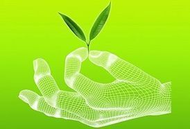

Advanced Farming Techniques

We have a prepared a generic report, on the various types of technological advancements that can be used in the agricultural industry, which would help in improving the quality and quantity of the crop yielded
- Soil and Water SensorsPerhaps the equipment having the most immediate effect are soil and water sensors. These sensors are durable, unobtrusive and relatively inexpensive. Even family farms are finding it affordable to distribute them throughout their land, and they provide numerous benefits. For instance, these sensors can detect moisture and nitrogen levels, and the farm can use this information to determine when to water and fertilize rather than rely on a predetermined schedule. That results in more efficient use of resources and therefore lowered costs, but it also helps the farm be more environmentally friendly by conserving water, limiting erosion and reducing fertilizer levels in local rivers and lakes.
- Weather TrackingAlthough we still make jokes about our local meteorologists, the truth is that computerized weather modeling is becoming increasingly sophisticated. There are online weather services that focus exclusively on agriculture, and farmers can access these services on dedicated onboard and handheld farm technology but also via mobile apps that run on just about any consumer smartphone. This technology can give farmers enough advanced notice of frost, hail and other weather that they can take precautions to protect the crops or at least mitigate losses to a significant degree.
- Satellite ImagingAs remote satellite imaging has become more sophisticated, it’s allowed for real-time crop imagery. This isn’t just bird’s-eye-view snapshots but images in resolutions of 5-meter-pixels and even greater. Crop imagery lets a farmer examine crops as if he or she were standing there without actually standing there. Even reviewing images on a weekly basis can save a farm a considerable amount of time and money. Additionally, this technology can be integrated with crop, soil and water sensors so that the farmers can receive notifications along with appropriate satellite images when danger thresholds are met.
- Pervasive AutomationPervasive automation is a buzz term in the agriculture technology industry, and it can refer to any technology that reduces operator workload. Examples include autonomous vehicles controlled by robotics or remotely through terminals and hyper precision, such as RTK navigation systems that make seeding and fertilization routes as optimal as possible. Most farming equipment already adopts the ISOBUS standard, and that puts on the precipice of a farming reality where balers, combines, tractors and other farming equipment communicate and even operate in a plug-and-play manner.
- Minichromosomal TechnologyPerhaps one of the most exciting advents in agriculture technology is coming in a very tiny package. A minichromosome is a small structure within a cell that includes very little genetic material but can, in layman’s terms, hold a lot of information. Using minichromosomes, agricultural geneticists can add dozens and perhaps even hundreds of traits to a plant. These traits can be quite complex, such as drought tolerance and nitrogen use. However, what is most intriguing about minichromosomal technology is that a plant’s original chromosomes are not altered in any way. That results in faster regulatory approval and wider, faster acceptance from consumers.
- RFID TechnologyThe soil and water sensors mentioned earlier have set a foundation for traceability. The industry has only begun to realize this infrastructure, but it’s taking shape quickly. These sensors provide information that can be associated with farming yields. It may seem like science fiction, but we’re living in a world where a bag of potatoes can have a barcode that you can scan with your smartphone in order to access information about the soil that yielded them. A future where farms can market themselves and have loyal consumers track their yields for purchase is not far-fetched.
- Vertical FarmingVertical farming has been a science fiction topic as far back as the 1950s and perhaps further, and now it’s not only scientifically viable but will be financially viable within the decade. Vertical farm technology Vertical farming a component of urban agriculture is the practice of producing food in vertically stacked layers. This offers many advantages. Perhaps the most obvious is the ability to grow within urban environments and thus have fresher foods available faster and at lower costs. However, vertical farming won’t be limited to just urban environments like initially expected. Farmers in all areas can use it to make better use of available land and to grow crops that wouldn’t normally be viable in those locations.